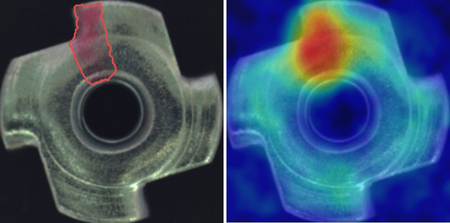
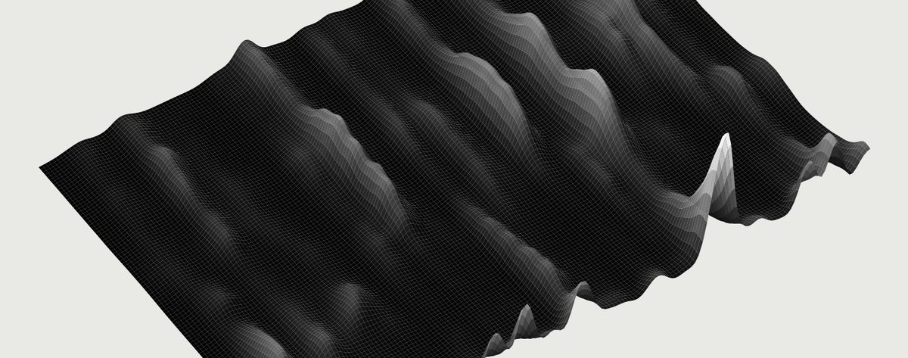
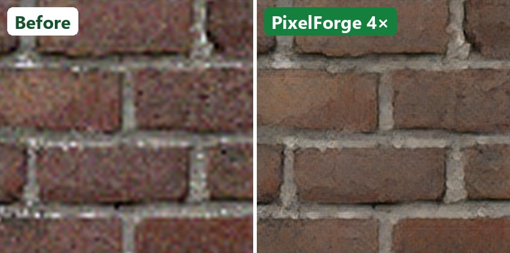

AI quality inspection
DefectScope
Spots scratches and dents on production lines, trained only on photos of good parts. Outperforms Intel's open-source reference.
94% defects caught 0 defect photos needed 50 ms per part, no GPU
We make AI work in the real world. From first idea to production, for any industry, on any platform.
Three products you can try right now, in your browser
Delivered through Upwork for startups and hardware companies.
Validated the math and code of a novel optimizer and shaped it into an investor-ready product.
Controlled A/B experiments proving where a learning-rate scheduling product speeds up training.
Ongoing model development for our longest-running client. Details are private.
Real-time detection and video processing for an in-vehicle camera product.
We review your data and goals and confirm what is achievable before you commit.
A working model on your data, with clear metrics.
Edge cases, optimization and accuracy checks.
Running on your stack, documented for your team.
What clients bring us, and the tools behind it.
Fast, compact models on low-cost hardware.
INT8, ONNX, TensorRT, vendor NPU toolchains
Detection, tracking and scene understanding for cameras, vehicles and robots.
YOLO, ByteTrack, landmarks, segmentation
Defect detection trained on good parts only.
PatchCore, label-free, CPU-ready
Recent research, rebuilt and turned into products.
Re-implementation, ablations, benchmarks
Agents and simulations that learn by doing.
Deep RL, custom Gym environments, simulation
Models for raw audio and sensor streams.
Raw audio, graph attention, time series
Assistants that answer from your documents, and models that generate images.
LLMs, RAG, LangChain, GANs
Prediction, risk scoring and optimization on business data.
XGBoost, scikit-learn, numerical optimization
Built in-house. The demos run in your browser.

AI quality inspection
Spots scratches and dents on production lines, trained only on photos of good parts. Outperforms Intel's open-source reference.
94% defects caught 0 defect photos needed 50 ms per part, no GPU

Deepfake voice detection
Tells a real voice from an AI clone in seconds, even for cloning methods it has never seen.
1.4% error rate 11 unseen cloning methods 0.14% false alarms on real voices

Game graphics enhancement
Restores old, blurry game textures to crisp 4× HD in a fraction of a second, seamless tiles included.
4× sharper resolution 15× lighter model ~9× faster
Attack-resistant anomaly detection for sensor networks, with guaranteed limits on false alarms.
An engine that adapts how models learn as they train, benchmarked against standard methods across frameworks.
A new architecture that spots anomalies at every scale, developed with a university professor for a top computer vision conference.
Follows a fast-moving ball and hears every hit. Trained on simulated courts, so no manual labelling is needed.
Image generation, game-playing agents, an object detector built from scratch, and a deployed medical-fraud detector (94% accuracy).
A confidential production system, shown by architecture only.
Catch fatigue, distraction and safety violations in real time, with no network and no video leaving the vehicle.
Parallel vision models on one low-power chip, turning frames into graded safety events with on-device video clips and logs.
Low-precision models that keep full-precision accuracy.
Several networks sharing one low-power chip at stable frame rates.
Deployed outputs verified against training, end to end.
Noisy per-frame signals turned into reliable, graded alerts.
Capture, logging and evidence with zero cloud dependency.
M2M stands for Model2Metal: taking AI from an idea to a product that works. Every project is led by a senior engineer, from first experiment to launch.
PyTorch, timm, Ultralytics, YOLO, OpenCV, Blender
ONNX, INT8 quantization, TensorRT
Embedded NPUs, ONNX Runtime Web, Docker, AWS
Tell us about your project. We reply within a day.
Prefer email? singhpriyaanshu308@gmail.com